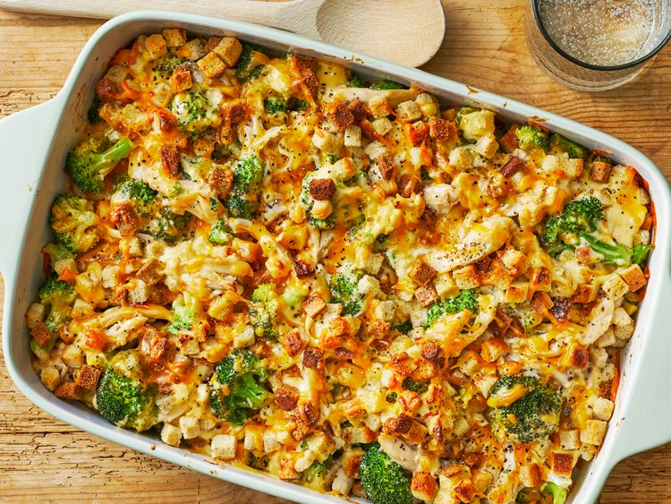

Home
Brocolli Chicken Casserole

Description
A deliciously creamy chicken, broccoli, and stuffing casserole with shredded chicken and tender broccoli in a cheesy mushroom sauce. Use your favorite stuffing mix to sprinkle over top for a crunchy, flavorful topping. Use leftover chicken or turkey to speed up prep time even more.
Ingredients
- 4 (5 ounce) skinless, boneless chicken breasts
- 1 (10.5 ounce) can condensed cream of mushroom soup (such as Campbell’s)
- 1 tablespoon mayonnaise
- 1 pound broccoli florets, cooked
- 1 cup shredded Cheddar cheese
- 1 cup dry stuffing mix
Steps
- Honestly just do whatever you want, shit cant go wrong with a recipe this simple.